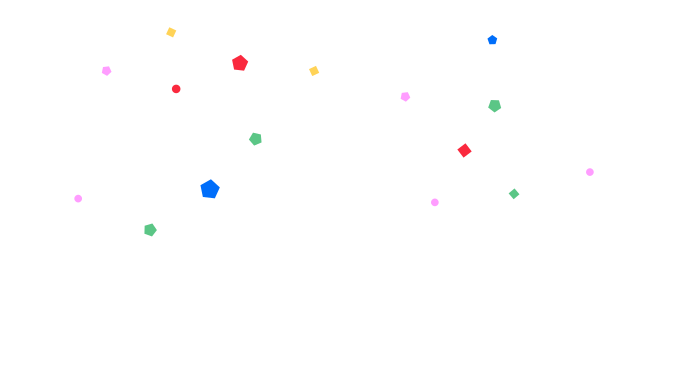

שאלון אנגלית

כל הכבוד, השלמתם את השאלון!
לפני ההגשה, תוכלו לחזור לשאלות, לעבור על התשובות ולשנות אותן במידת הצורך.
מוכנים? הגישו את השאלון כדי שנוכל להתאים את לימודי האנגלית ליכולות ולצרכים שלכם.
התשובות נשמרו, התהליך עשוי להימשך מעט זמן. אפשר לצאת ולחזור בהמשך.
מעבדים את התשובות בהאזנה…